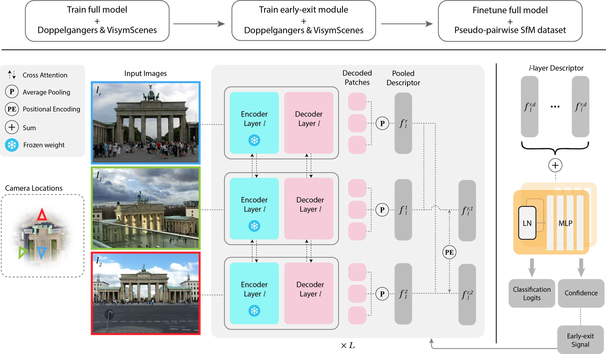
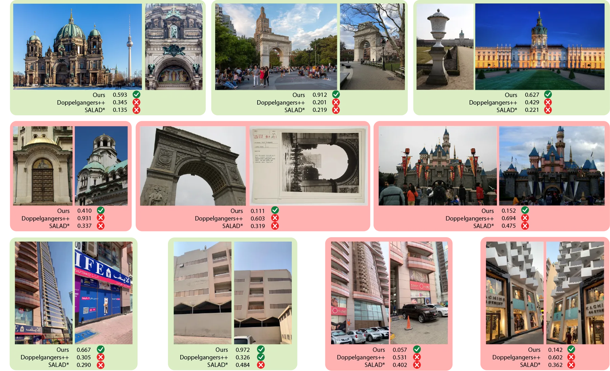
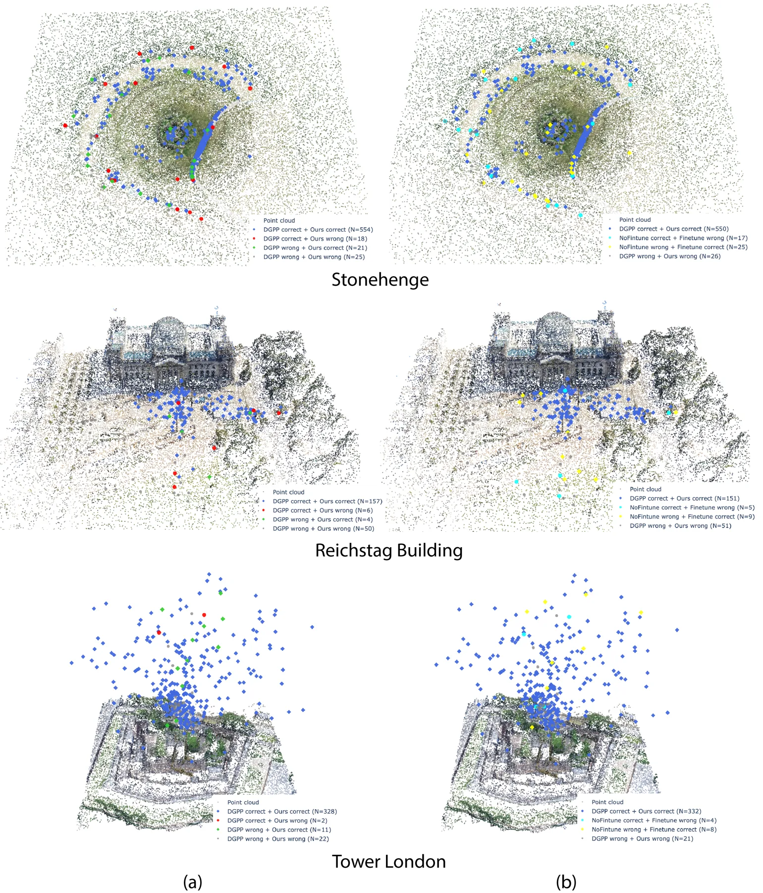
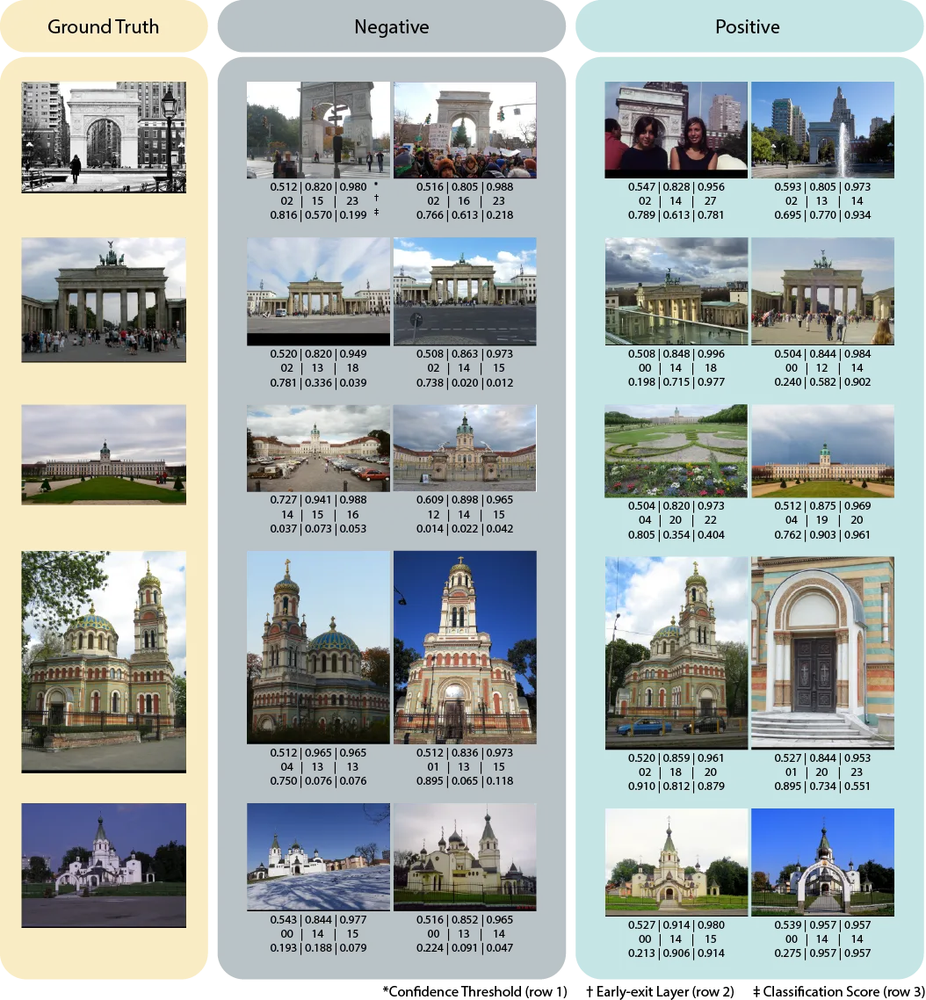
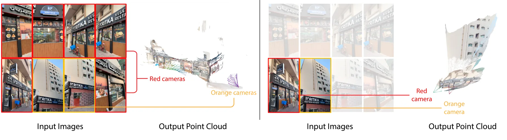

MVDG：在无约束真实图像上的高效多视图 3D 消歧
MVDG: Efficient Multi-view 3D Disambiguation on Unconstrained Real-World Images
在冻结 VGGT 上做置信度驱动的早退多视图消歧：单次编解码替代 O(n²) 成对比较，VisymScenes Acc 0.9441/F1 0.9457，推理 103.9 ms（Doppelgangers++ 165 ms），早退阈值 0.8 时 0.9503；SfM 大幅提升（Big Ben AUC@10 0.511→0.747）。
Acc/F1
Acc
latency
SfM AUC
作者、单位与技术谱系 · Research context
作者与单位
研究脉络
- Doppelgangers（Cai et al., 2023）上游问题关系：定义并处理「外观相似的不同 3D 结构」错配问题，是本方法的数据与问题来源。[论文第 1 节与参考[1]]
- Doppelgangers++ 成对分类器方法基座关系：本方法要与成对分类范式对比，并在其成对监督基础上扩展到多视图。[论文第 5 节]
- VGGT（3D 基础模型）技术基座关系：冻结 VGGT 编码器作为多视图几何特征来源，取代成对特征比较。[论文第 5.2 节]
合作网络
- USC 与 ICT 双署名University of Southern California → Institute for Creative Technologies关系：共同署名[arXiv 首页署名]
- 对 AerialMegaDepth / GLOMAP 的技术依赖伪成对训练与 SfM 评测 → AerialMegaDepth + GLOMAP关系：明确技术依赖[论文第 5.6、5.7 节]
作者与单位取自 arXiv 首页署名；脉络依据论文引用与自述；未发现公开代码声明，故不登记代码节点。
方法本质拆解 · What actually changed
是不是微调？
VGGT 编码器冻结，训练的是每层的轻量 DPT 头、打分头与置信度头；最终采用不微调编码器的版本。训练分两阶段（成对→多视图迁移），并在 AerialMegaDepth 伪成对数据上微调以稳定 SfM 行为，所以可学参数集中在新增的轻量模块。
有没有额外约束？
监督上有两个约束：相似度打分用 focal loss（γ=1）、置信度头用 BCE；训练数据用几何重叠（共视比）从 AerialMegaDepth 生成伪成对标签，把成对监督传播到粗视图组。没有显式几何硬约束，几何以 VGGT 中间层 token 的形式进入。
推理/后端到底做了什么？
推理是对多视图单次编解码：冻结 VGGT 出 token→DPT 头出描述子→打分头分类，并让置信度头决定是否提前退出跳过深层。它作为视图图剪枝模块接在 GLOMAP 之前，不含 BA、无逐场景优化。
方法本质是什么？
本质是把「成对图像消歧」升级为「多视图联合消歧 + 置信度早退」：多视图上下文提供 3D 感知判据，早退避免过深表示重新引入歧义。它没有做的是消除 Doppelgangers 标注噪声，也没在真实大规模 SfM 上端到端闭环验证。
输入为多视图图像（含相似结构）；改变的位置是消歧由 O(n²) 成对分类换成冻结 VGGT 上的单次多视图编解码；约束/合并动作是伪成对监督 + 置信度早退 + SfM 前置剪枝；直接效果是可比精度下更快推理并提升 SfM 位姿精度。

动机与问题Motivation
动机与问题
在野大规模重建里，视觉上几乎相同的不同 3D 表面会让匹配器把不同地点/视角错配；已有 Doppelgangers++ 用成对分类器处理，但成对设计一是限制了多视图上下文，二是给下游 SfM 带来 O(n²) 复杂度。论文还发现：直接在噪声标注上多视图微调 VGGT 不稳定，会随监督噪声退化。因此要同时解决两个问题：如何用多视图上下文一次性消歧以降低复杂度，以及如何在有标签歧义时稳定训练。
方法Method
方法总览
骨干是冻结的 VGGT 编码器，从选定中间层取 token；每层用一个轻量两层 DPT 头产生逐图描述子，送入打分头做相似度分类，另有置信度头（BCE 训练）决定是否早退。训练分两阶段：先在 Doppelgangers/VisymScenes 上做成对训练，再把成对监督转移到粗视图组做多视图训练；之后在 AerialMegaDepth 伪成对数据上微调以稳定 SfM 行为。推理时对多视图图像单次编解码得到消歧结果与置信度，高置信时提前退出、跳过深层计算。
关键技术细节
关键设计是「选择性中间层 token + 早退」：作者观察到最深层表示过于视图不变、反而重新引入歧义，于是允许在较浅层就做置信决策，兼顾精度与速度。伪成对标签由可得的 3D/相机信息算几何重叠（共视比）生成；论文拟合一个饱和指数映射 Inliers = y0 + A(1−exp(−k·Acc)) 把伪成对精度映射到 SfM inlier 比，作为廉价验证代理。训练用 focal loss（打分头，γ=1）+ BCE（置信度头），通道维 1024、8 注意力头、梯度累积 8 步、2×H100。

实验Experiments
实验设置
消歧评测在 VisymScenes（3,180 对）与 Doppelgangers++（DG++）上进行，指标为 Accuracy、Precision、Recall、F1 与推理时间。SfM 评测用 AerialMegaDepth，把方法作为视图图剪枝模块接在 GLOMAP 前，指标为相机位姿 AUC@3/5/10 与 inlier 比（重建相机/输入相机）。早退消融在 VisymScenes 上扫阈值 0.5/0.8/0.9/0.95；稳定性消融用迭代 38k–112k 的检查点比较是否伪成对微调。
实验数字与比较
消歧主表（论文表 1）：Ours 在 VisymScenes Acc 0.9441、F1 0.9457，Doppelgangers++ 0.9355/0.9375，SALAD 0.8104/0.8237；推理 Ours 103.92 ms、DG++ 165 ms、SALAD 9.87 ms；但在 DG++ 数据集上 Ours（0.889）低于 DG++（0.937）。SfM（论文表 4）：Big Ben AUC@10 0.747 对 DG++ 0.511；Ponte Di Rialto AUC@3 0.442 对 0.068、inlier 173/369 对 161/329；Louvre Pyramid AUC@10 0.930 对 0.928。多视图 vs 成对监督：AUC@5 0.690→0.701、AUC@10 0.753→0.775、inlier 0.7579→0.7698，作者称多视图上下文改善中/长程判别。
消融/失败边界
池化与微调消融（论文表 2）：完整 Ours 0.9441/0.9457；换 AttnPool 0.9378/0.9396、GeMPool 0.9039/0.9072、做成检索式 0.9089/0.8969；加普通微调反而到 0.9522/0.9530，作者仍保留不微调版本。置信度阈值消融（论文表 3）：τ=0.5 时 Acc 0.8676/99.56 ms；τ=0.8 时 0.9503/103.92 ms；τ=0.9 时 0.9500；τ=0.95 时 0.9447，说明早退在高阈值下兼顾精度与速度。失败边界：在 DG++ 成对基准上低于 DG++，作者归因于 Doppelgangers 标注噪声与把成对标签传播到多视图组引入的歧义；论文未做真实大规模 SfM 的端到端评测。
局限与迁移Limitations & Transfer
局限与待核验
作者明确承认在 DG++ 成对基准上不及 Doppelgangers++，并把原因指向监督噪声；未来工作包括修正 Doppelgangers 标注、发布更好的多视图消歧数据集、与 SfM/MVS 闭环集成。我们的待核验项：论文用伪成对精度作为 SfM 代理并给出饱和指数拟合（如 inlier 参数 y0=0.572、A=0.412、k=3.51），但该代理关系是否在真实大规模在野场景成立需独立验证；早退依赖置信度头校准，跨数据集校准未报告。
与你研究路线的关系
可迁移模块是「把匹配消歧做成前端的可插拔视图图剪枝」：我们能把它接到自己的 SfM/回环检索前端，用置信度决定是否保留候选边，降低错误约束进入后端。第二是「用廉价代理指标替代昂贵下游评测」的思路：伪成对精度→SfM inlier 的映射与我们想用局部一致性预测全局定位质量的需求一致。下一步最小实验：在我们的回环/重定位候选上，比较「成对判定 vs 多视图联合判定」的错误接受率与下游 ATE，并画置信度阈值-精度-耗时曲线。







